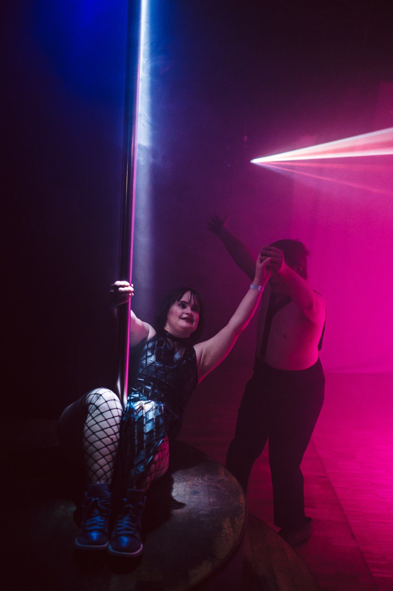
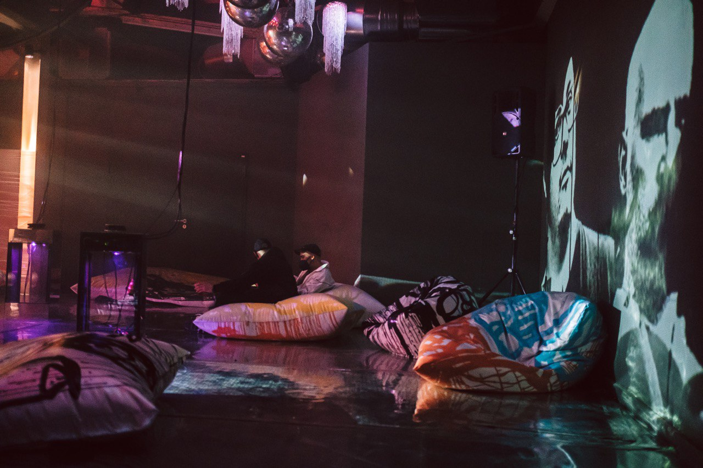
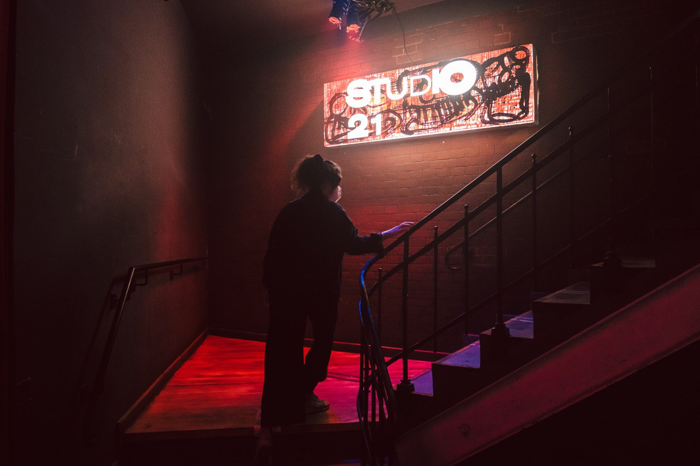

Immersives Cluberlebnis
Studio 21
RambaZamba Theater, Berlin 2021
Im Rahmen des Pop-Kultur-Festival 2021 feierte das RambaZamba Theater sein 30- jähriges Bestehen. In diesem Zusammenhang entstand auch das „Studio 21“, ein inklusiver Club, der von Menschen mit und ohne Behinderung in verschiedenen künstlerischen Kontexten verantwortet und betrieben wurde. In theatralen und immersiven Rauminterventionen konnte man das „Studio 21“ an drei Tagen des Festivals besuchen. Die Clubausstattung fand in enger Zusammenarbeit mit dem Kunstatelier des Hauses statt.
- 
- 
- 
Regie und Kunst
Ensemble
Musik
Leo Solter
Kostümbild
Beatrix Brandler
Bühnenbild
Wanda Traub, Hanna Zeyer